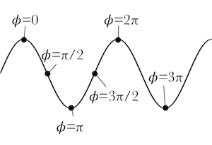

A sinusoidal wave is a wave with a shape like a sine or a cosine.
Amplitude \(A\) is the maximum displacement of the wave from equilibrium. The energy in a wave is proportional to its amplitude squared, which is known as the wave's intensity \(I=A^2\).
Speedv is the speed of the disturbance through the medium.
Wavelength \(\lambda\) is the distance from one point on a wave to the identical point in the next cycle.
PeriodT is the time it takes for one wavelength to pass by a point in space. Alternatively, it is the time it takes for a part of the medium to undergo one complete oscillation.
Frequency (f or ν) is the number of wavelengths that pass by a point in space in a given amount of time, or the number of oscillations a part of the medium undergoes in a given amount of time. The reciprocal of the period.
The last four values are related by the wave equation
$$v={\lambda\over T}=\lambda f$$
Given this animation,
t=0
find the following values. (Note: they are all integers.)
λ=
T=
v=
A=
Overall Phase

The phases of a cosine wave.
The phase \(\phi\) of a sinusoidal wave is the part of the cycle the wave is in at a particular location and moment in time. Phase is measured in radians; one full wavelength is \(2\pi\) radians across. If we define waves in terms of cosines, then a phase of \(\phi=0\) corresponds to a crest, \(\phi=\pi\) corresponds to a trough, and so forth. Note that \(\phi=2\pi\) is the same as \(\phi=0\), and so forth. The displacement of a sinusoidal wave depends simply on its phase, as
$$y(x,t)=A\cos\phi(x,t)$$
(Some texts will use sine instead of cosine; the difference is largely irrelevant.)
The phase of a sinusoidal wave depends on the position and time. In the wave snapshot shown to the right, the phase increases as the position \(x\) increases. If we move a distance \(\lambda\) to the right, the phase changes by \(2\pi\); if we move a distance \(\lambda/2\) to the right, the phase changes by \(2\pi/2\). To calculate the phase change, then, we can divide the distance moved by the wavelength of the wave, and then multiply by \(2\pi\):
$$\phi(x,t=0)=2\pi{x\over\lambda} \quad \hbox{(when $t=0$)}$$
The phase at a particular spot changes as the wave moves.
If the wave starts to move to the right (in the positive x direction), notice how the phase at any one particular location decreases. If we wait a time \(T\), the phase will decrease by \(2\pi\), and in general the phase changes by \(-2\pi(t/T)\). However, if the wave is moving to the left, the phase increases at the same rate. Thus we can write the phase as
$$\phi(x,t)=2\pi{x\over\lambda}\mp 2\pi {t\over T} \quad \hbox{wave moving in the $\pm x$ direction}$$
This formula assumes that the phase at \(x=0,\,t=0\) is zero. In practice, if the initial phase is \(\phi_0\), then
$$\boxed{\phi(x,t)=2\pi{x\over\lambda}\mp 2\pi {t\over T}+\phi_0}$$
making the general formula for the displacement
$$y(x,t)=A\cos\left(2\pi{x\over\lambda}\mp 2\pi{t\over T}+\phi_0\right)$$
Calculate phase of a randomly chosen wave
There are several other forms we can write the phase in. It is common to replace the period with the frequency:
$$\phi(x,t)=2\pi{x\over\lambda}\mp 2\pi ft+\phi_0$$
We can also fold the initial phase (which is just a constant) into the frequency term, writing
$$\phi(x,t)=2\pi{x\over\lambda}\mp 2\pi f(t-t_0)$$
where \(t_0\) is a time where the displacement at \(x=0\) is at its maximum positive value, so that \phi(0,t_0)=0.
What is the relationship between \(\phi_0\) and \(t_0\)? Calculate it, check with your neighbor, and then press the reveal button to see if you're right.
$$\phi_0=\pm 2\pi f t_0$$
Angular frequency and wavenumber
There are two other measures of waves you may be less familiar with.
demonstration of angular frequency
The angular frequencyω=2πf of a wave is the number of radians that pass by a certain spot per unit of time.
Wavenumberk=2π/λ is the number of radians that fit within a given amount of distance. It is the spatial version of the angular frequency: a higher wavenumber means more waves can fit into
These variables allow us to write the phase in a more compact form.
Calculate the angular frequency and wavenumber of a given wave.
Find the relationship between wavenumber, angular frequency, and wave speed.
Rewrite the phase \(\phi(x,t)\) in terms of \(k\) and \(\omega\), check with your partner, and then press Reveal.
$$\phi(x,t)=kx\mp\omega t+\phi_0$$
We have been changing the sign of the time term to indicate the direction of the wave's motion, but one can also change the sign of the position term. In fact, we will fold the sign into the wavenumber itself, using positive k for waves that move to the right, and negative k for waves that move to the left. With that convention, the phase can be written as
$$\phi(x,t)=kx-\omega t+\phi_0$$